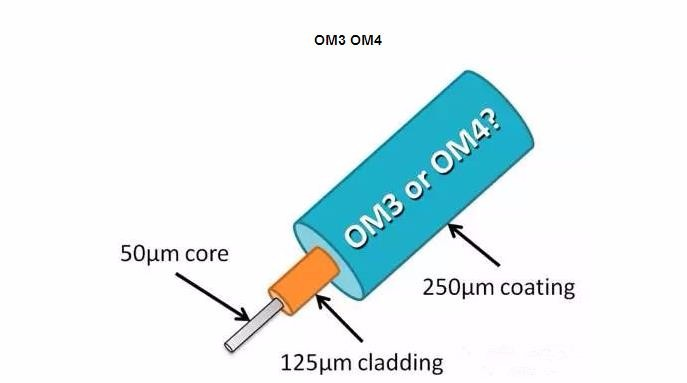

2018年09月23日
screen配置
.screenrc
- 编码设置成utf8后，显示GBK编码的时候是乱码
# http://www.gnu.org/software/screen/manual/screen.html # https://www.kilobitspersecond.com/2014/02/10/understanding-gnu-screens-hardstatus-strings/ # Set default encoding using utf8 defutf8 on # 解决中文乱码. defencoding utf8 encoding utf8 utf8 # 兼容shell 使得.bashrc .profile /etc/profile等里面的别名等设置生效 shell -$SHELL # set the startup message startup_message off term linux # 解决无法滚动 termcapinfo xterm|xterms|xs ti@:te=\E[2J # 屏幕缓冲区行数 defscrollback 10000 # 下标签设置 hardstatus on #caption always "%{= kw}%-w%{= kG}%{+b}[%n %t]%{-b}%{= kw}%+w %=%d %M %0c %{g}%H%{-}" caption always "%{= kw}%-w%{= kG}%{+b}[%n %t]%{-b}%{= kw}%+w %=%Y-%m-%d %{G}%H%{-}" # turn visual bell off vbell off # Automatically detach on hangup. autodetach on # If a screen dies, dont freeze the whole screen waiting for it. # Enable non-blocking mode to better cope with flaky ssh connections. nonblock on # default windows screen -t vim 1 screen -t bash 0 #Keboard binding #bind Alt+z to move to previous window bindkey ^[z prev # bind Alt+x to move to next window bindkey ^[x next # bind Alt`~= to screen0~12 bindkey "^[`" select 0 bindkey "^[1" select 1 bindkey "^[2" select 2 bindkey "^[3" select 3 bindkey "^[4" select 4 bindkey "^[5" select 5 bindkey "^[6" select 6 bindkey "^[7" select 7 bindkey "^[8" select 8 bindkey "^[9" select 9 bindkey "^[0" select 10 bindkey "^[-" select 11 bindkey "^[=" select 12 # bind F5 to create a new screen bindkey -k k5 screen # bind F6 to detach screen session (to background) bindkey -k k6 detach # bind F7 to kill current screen window bindkey -k k7 kill # bind F8 to rename current screen window bindkey -k k8 title # Remove some stupid / dangerous key bindings bind ^k #bind L bind ^\ # Make them better bind \\ quit bind K kill bind I login on bind O login off bind } history
简单配置
hardstatus on
hardstatus alwayslastline
hardstatus string "%{.bW}%-w%{.rW}%n %t%{-}%+w %=%{..G} %H %{..Y} %m/%d %C%a "
startup_message off
termcapinfo xterm* ti@:te@
测试一下org mode生成图片html的相对路径。
